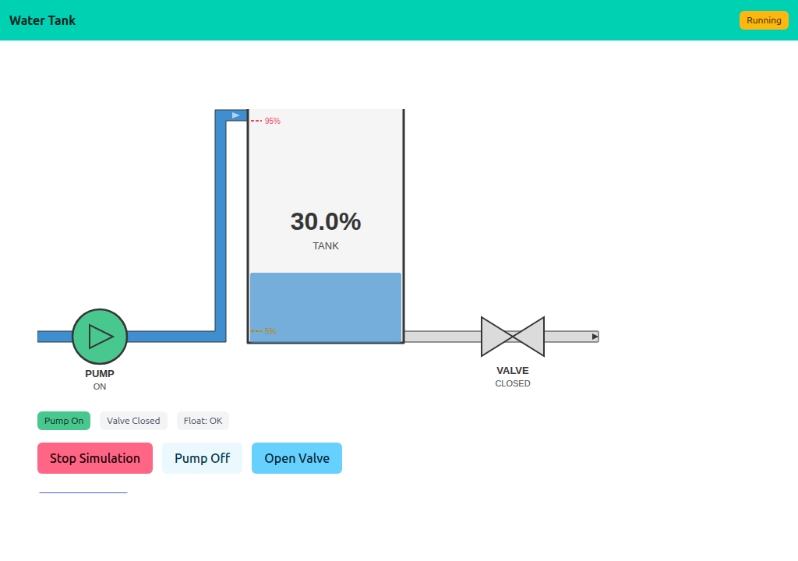
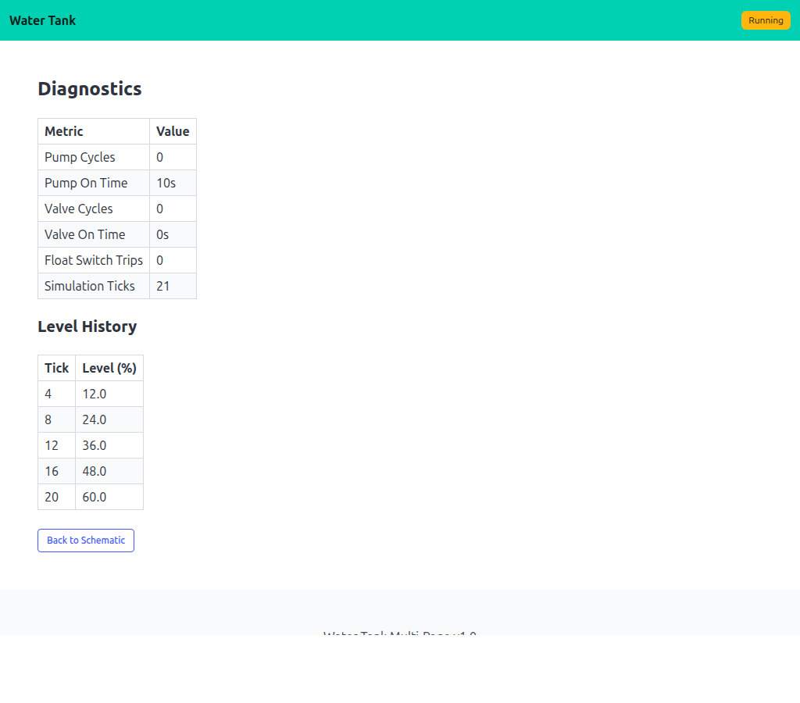

08 — Water Tank Multi-Page
Same simulation as 07, but with a second page (/diagnostics) that displays accumulated counters and a level history table. Both pages are independently polled by HTTP Refresh headers, so /diagnostics keeps refreshing itself rather than ping-ponging back to the schematic.
Interactivity level: 3 — Polling (whole page refresh, per-page) State scope: Global (server build) / Individual (WASM build)


/, the diagnostics page polls /diagnostics. Both views read from the same shared Simulation. The schematic uses the shared watertank widget; the diagnostics view is rendered straight to the buffer via lofigui.Print/Table.
Diagnostics counters
Simulation accumulates pump/valve cycles, on-time durations, and a rolling level history. Diagnostics() returns a DiagSnapshot for the diagnostics page to render:
type DiagSnapshot struct {
PumpCycles int
PumpOnTime time.Duration
ValveCycles int
ValveOnTime time.Duration
FloatTrips int
TickCount int
History []LevelEntry
}
The level history is kept down-sampled (one entry every N ticks) so the table stays a manageable size.
Multi-page refresh
The Refresh header reloads whichever URL the browser was on, so each page polls itself:
GET / → renderSchematic() → app.HandleDisplay(w, r)
GET /diagnostics → renderDiagnostics() → app.HandleDisplay(w, r)
app.HandleDisplay writes a Refresh header pointing at r.URL.Path. Hitting /diagnostics keeps refreshing /diagnostics; hitting / keeps refreshing /. Add a third page and it just works.
Running
task go-example:08 # server on :1348
task docs:capture:08 # capture the two screenshots above